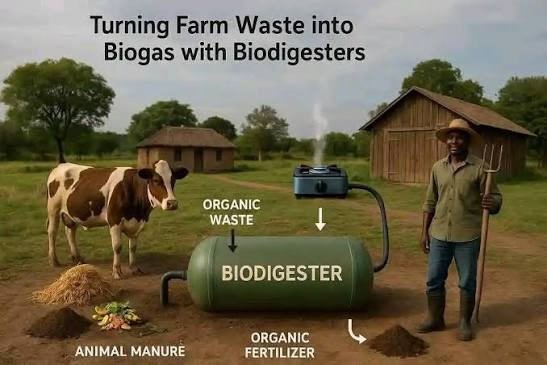

Activity 1 — Biomass & Biogas
Problem Statement
Activity 1: Design a biomass‑based biogas generation system for a dairy farm handling 100 cattle.

(Figure: Reference image for Biogas Plant)
Overview
Biogas systems convert wet organic residues into a usable fuel by cultivating anaerobic microbes in sealed digesters. The produced gas contains methane, carbon dioxide and trace contaminants. After desulfurization and drying, methane-rich biogas is burned in high‑efficiency engines or microturbines to produce electricity. Waste heat can be recovered for the digester or buildings, boosting total efficiency and providing stable, local energy from waste.
Source of energy
Energy originates from the chemical bonds of methane (CH₄) generated as microbes break down carbohydrates, fats and proteins without oxygen. Typical substrates include food waste, cattle manure and sewage sludge. By intercepting and using methane that would otherwise leak to the atmosphere, the system both supplies energy and reduces greenhouse gas impact.
Conversion process
Feedstock is pre‑processed and fed to a mesophilic or thermophilic digester. Bacteria and archaea convert volatile solids into biogas. The raw gas passes through H₂S removal (iron sponge/active carbon), moisture knock‑out and CO₂ conditioning. Clean gas fuels reciprocating engines or microturbines which turn a generator. Power electronics synchronize with the grid or serve on‑site loads.
Output / utilization
Primary output is electricity. Secondary outputs include hot water or steam from engine jacket and exhaust heat (CHP), which can keep digesters warm or serve nearby facilities. Digestate becomes a nutrient‑rich soil amendment, closing material loops and offsetting fertilizer use.
Real-world relevance
Biogas addresses waste management, energy security and climate goals simultaneously. Campuses and municipalities can divert organics from landfills, avoid methane emissions, and generate predictable on‑site power. When paired with CHP and nutrient recovery, projects deliver environmental, economic and educational value.